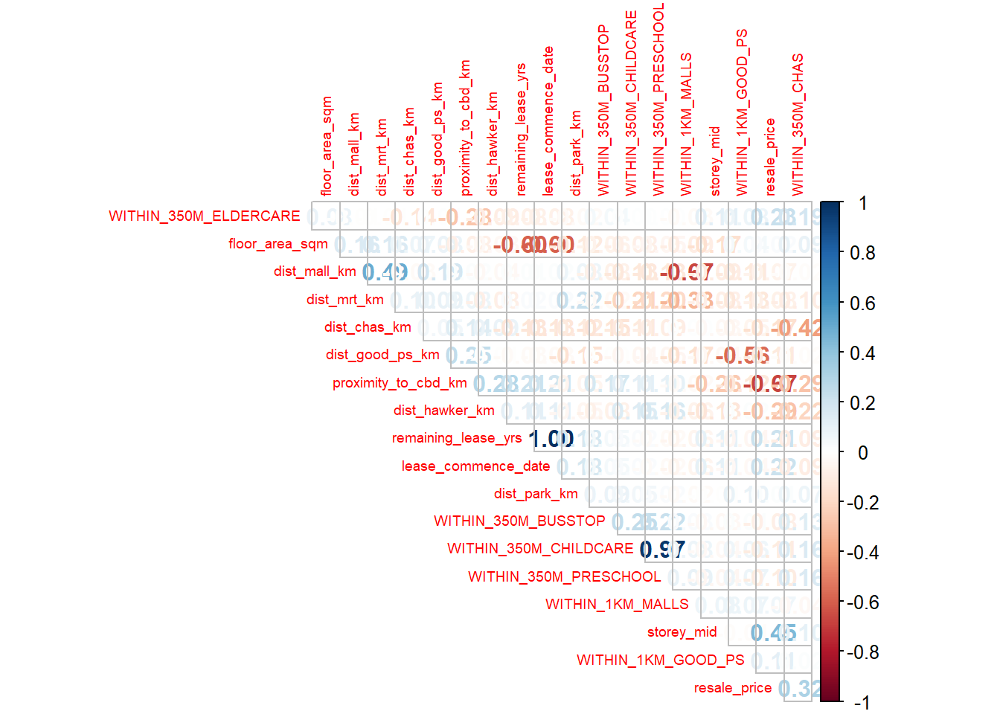
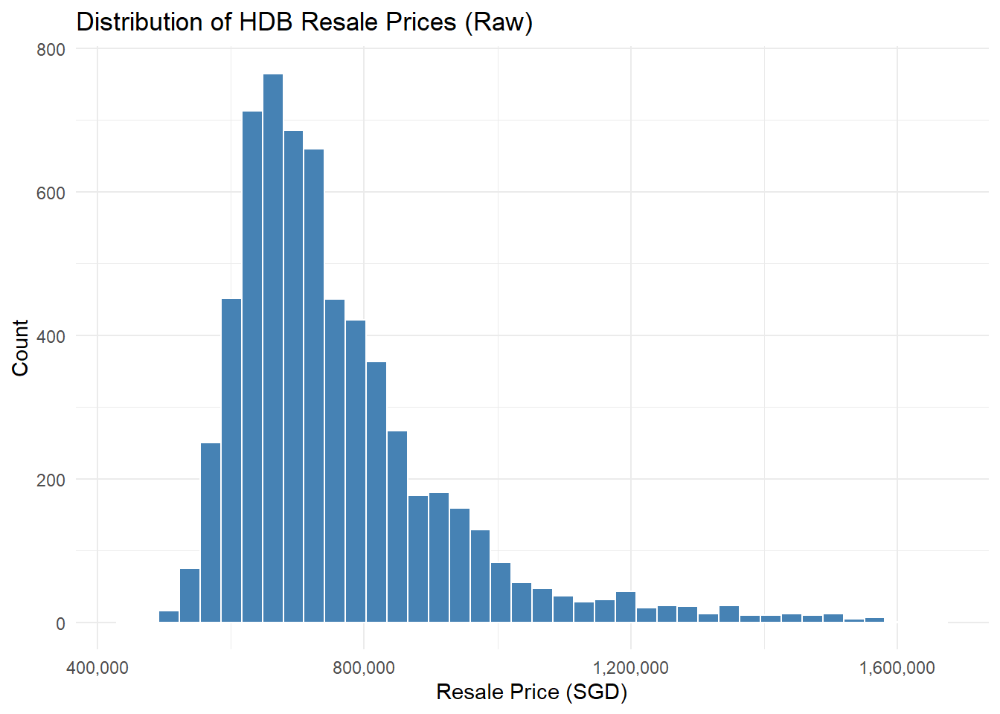
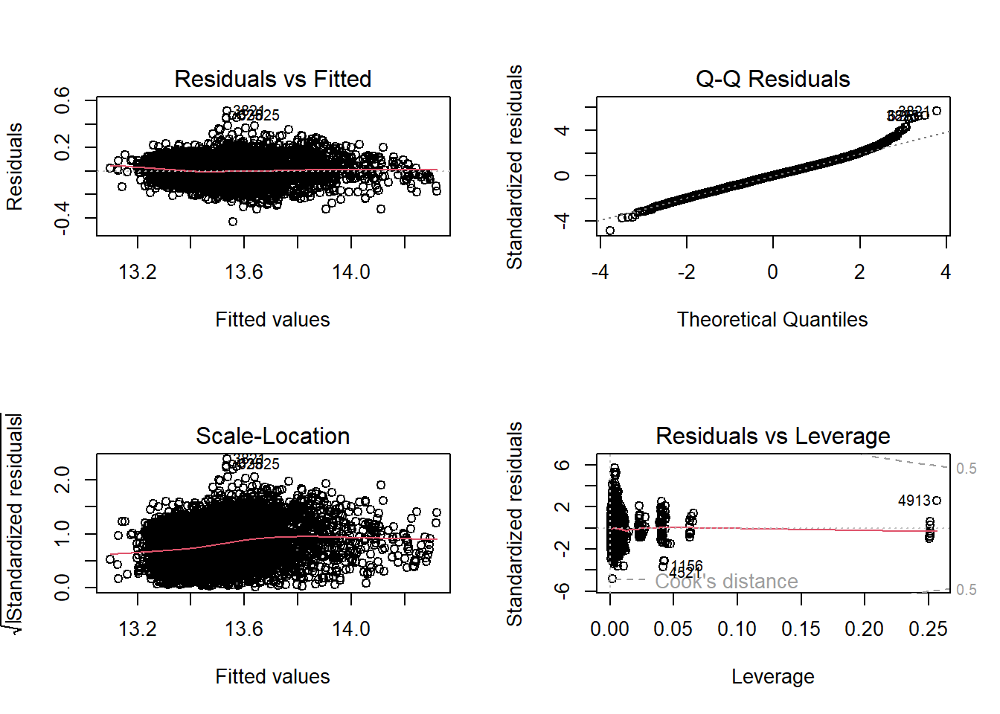
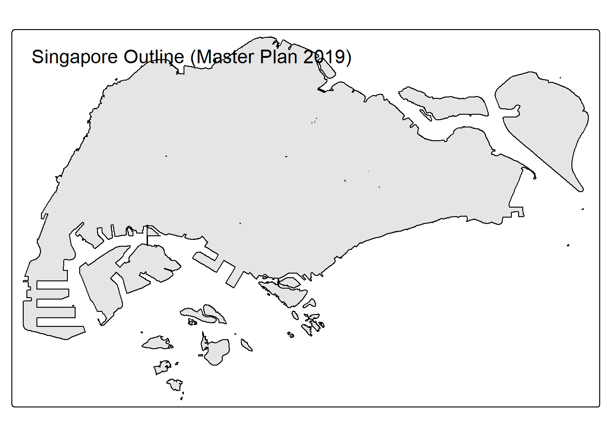
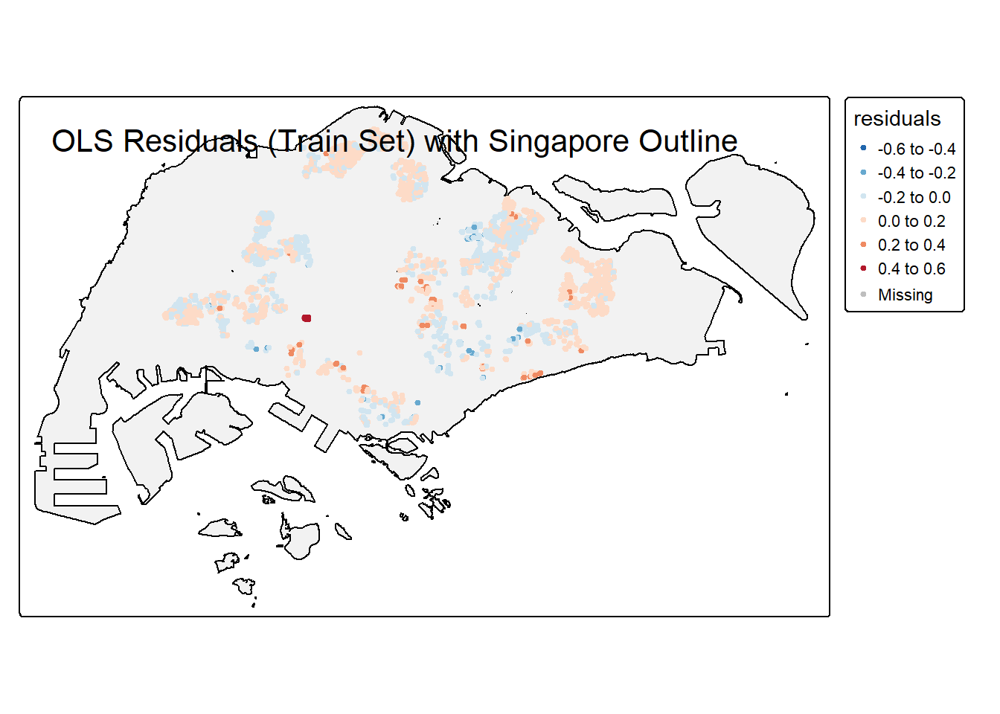

pacman::p_load(sf, spdep, GWmodel, SpatialML,
tmap, rsample, Metrics, tidyverse,httr, tidyverse,
jsonlite, progress,ggplot2,caret, ranger)Take Home Exercise 3
1 Predictive Modelling of HDB Resale Prices with Geographically Weighted Methods
1.1 Objective
Housing is an essential component of household wealth worldwide. Purchasing a home has always represented a major investment for most individuals. The price of housing is influenced by a wide range of factors. Some are macro-level, such as the overall state of the economy or the inflation rate, while others are property-specific. These can be further categorized into structural and locational factors.
Structural factors refer to the characteristics of the property itself, such as size, fittings, and tenure. Locational factors, on the other hand, relate to the neighbourhood context of the property, including proximity to childcare centres, public transport, and shopping facilities.
Traditionally, housing resale price models have been estimated using the Ordinary Least Squares (OLS) method. However, this approach does not account for spatial autocorrelation and spatial heterogeneity, which are commonly present in geographic datasets such as housing transactions. When spatial autocorrelation exists, OLS estimation of housing resale price models may produce biased, inconsistent, or inefficient results (Anselin, 1998). To address these limitations, Geographically Weighted Models (GWMs) have been introduced to more accurately calibrate both explanatory and predictive models for housing resale prices.
The objective of this take-home exercise is to develop a spatially informed model to predict HDB resale prices in Singapore, making use of appropriate geospatial analytics methods.
We will develop a model to predict HDB resale prices for the period July to September 2025, using HDB resale transaction data from July 2024 to June 2025.
2 Installing and Loading R packages
3 Data Preparation
3.1 HDB Dataset
3.1.1 Selecting Date of Interest
This data set comprises of HDB resale transactions from Jan 2017 onwards. For the purpose of the hands on Exercise, the code chunk below will be used to extract a sub-set of transaction records on 5-Room flat transacted from July 2024 to September 2025.
HDBresale <- read_csv(
"data/rawdata/HDBresale.csv") %>%
filter(flat_type == "5 ROOM") %>%
filter(month >= "2024-07" & month < "2025-10")3.1.2 Geocoding HDB resale data
In this section, we will geocode HDB resale data by using SLA Onemap Geocode API.
Let us prepare a geocoding function by using the code chunk below. It aims to perform the following tasks:
Combining the block and street name into an address. The addresses will be used to geocode instead of postal code that you learned in In-class Exercise 3b, Passing the address as the searchVal in our query, Sending the query to OneMapSG search. Note: Since we don’t need all the address details, we can set getAddrDetails as ‘N’, Converting response (JSON object) to text, Saving response in text form as a dataframe, and Retain the latitude and longitude for our output.
geocode <- function(block, streetname) {
base_url <- "https://onemap.gov.sg/api/common/elastic/search"
address <- paste(block, streetname, sep = " ")
query <- list("searchVal" = address,
"returnGeom" = "Y",
"getAddrDetails" = "N",
"pageNum" = "1")
res <- GET(base_url, query = query)
restext<-content(res, as="text")
output <- fromJSON(restext) %>%
as.data.frame %>%
select(results.LATITUDE, results.LONGITUDE)
return(output)
}Next, the code chunk below will be used to to execute the geocoding function:
HDBresale$LATITUDE <- 0
HDBresale$LONGITUDE <- 0
for (i in 1:nrow(HDBresale)){
temp_output <- geocode(HDBresale[i, 4], HDBresale[i, 5])
HDBresale$LATITUDE[i] <- temp_output$results.LATITUDE
HDBresale$LONGITUDE[i] <- temp_output$results.LONGITUDE
}3.1.3 Converting storey_range to a Numerical Value (storey_mid)
The storey_range field in the HDB resale dataset is provided as a text range such as "07 TO 09" or "13 TO 15". Since machine learning models require numerical inputs, we convert this range into a single numeric value that approximates the floor level of the unit.
This is done by:
- Removing spaces from the text
- Example:
"07 TO 09"→"07TO09"
- Example:
- Splitting the range into the lower and upper floor values
"07TO09"→"07"and"09"
- Calculating the midpoint (average) of the two values
- [ = 8 ]
- Creating a new variable named
storey_midto store this midpoint value.
This numeric representation allows the floor level information to be used effectively in statistical and machine learning models.
- Remove the original storey_range column, as it is no longer needed.
storey_mid <- function(x) {
x %>%
str_replace_all(" ", "") %>% # remove spaces
str_split("TO") %>% # split into lower and upper floors
sapply(\(v) mean(as.numeric(v))) # convert to numeric and take midpoint
}
HDBresale <- HDBresale %>%
mutate(storey_mid = storey_mid(storey_range)) %>% # create numeric floor feature
select(-storey_range) # remove the original text column3.1.4 Converting remaining_lease to a Numeric Value (remaining_lease_yrs)
The remaining_lease field is provided as text (e.g., "87 years 4 months"). To use this information in modelling, we convert it into a numeric value representing the total lease remaining in years.
The function convert_remaining_lease():
- Extracts the number of years.
- Extracts the number of months (or uses 0 if not specified).
- Converts months into a fraction of a year (
months / 12). - Adds the two together to get a single numeric value.
We then apply the function to create a new column remaining_lease_yrs and drop the original text column.
convert_remaining_lease <- function(x) {
years <- as.numeric(str_extract(x, "\\d+(?=\\syear)"))
months <- str_extract(x, "(?<=years?\\s)\\d+(?=\\smonth)") %>% as.numeric()
months[is.na(months)] <- 0
years + months/12
}
HDBresale <- HDBresale %>%
mutate(remaining_lease_yrs = convert_remaining_lease(remaining_lease)) %>%
select(-remaining_lease)3.2 Proximity Analysis
In this section, we will learn how to count the number of geographic entities located within a defined distance from each HDB property.
3.2.1 Converting to an sf object
Before performing proximity analysis, it is important to ensure that:
- input data sets must be in sf objects, and
- they must be in similar projected coordinates systems.
In the code chunk below,
- st_as_sf() is used to convert HDBresale tibble data.frame to sf object by using values from LONGITUDE and LATITUDE columns to form the geometry features.
- st_transform() is then used to transform the sf object into svy21 projected coordinates system.
- the output sf object is called HDBresale_sf. It is in sf data.frame format.
HDBresale_sf <- HDBresale %>%
st_as_sf(
coords = c("LONGITUDE", "LATITUDE"),
crs=4326) %>%
st_transform(crs = 3414)3.2.2 PreSchool Location
Next, we will locate and download Pre-Schools Location data from Singapore’s open data portal. There are both geojson and kml version. In this exercise, the kml version will be used.
Then, code chunk below will be used to import the preschool location data into R environment by using st_read() of readr package.
preschool = st_read(
"data/rawdata/PreSchoolsLocation.kml") %>%
st_transform(crs= 3414)Reading layer `PRESCHOOLS_LOCATION' from data source
`C:\govanzz\ISSS626_GEO_AUG_2025\Take_Home_Exercise\Take_Home_Ex03\data\rawdata\PreSchoolsLocation.kml'
using driver `KML'
Simple feature collection with 2290 features and 2 fields
Geometry type: POINT
Dimension: XYZ
Bounding box: xmin: 103.6878 ymin: 1.247759 xmax: 103.9897 ymax: 1.462134
z_range: zmin: 0 zmax: 0
Geodetic CRS: WGS 84Lastly, code chunk below will be used to count the number of pre-schools located within 350m of each HDB property.
within_350m <- st_is_within_distance(
HDBresale_sf, preschool, dist = 350)
HDBresale_sf <- HDBresale_sf %>%
mutate(WITHIN_350M_PRESCHOOL = map_int(within_350m, length))3.2.3 Proximity to CBD
The code chunk below computes the Euclidean (straight-line) distance between each flat and the Downtown Core (CBD) centroid using Singapore’s projected coordinate system (EPSG:3414, SVY21). The resulting columns proximity_to_cbd_m and proximity_to_cbd_km represent the flat’s distance to the CBD in meters and kilometers respectively
# --- Define Downtown Core (CBD) coordinates (WGS84) ---
cbd_lon <- 103.85
cbd_lat <- 1.28967
# --- Create CBD point and transform to SVY21 (3414) ---
cbd_wgs84 <- st_sfc(st_point(c(cbd_lon, cbd_lat)), crs = 4326)
cbd_3414 <- st_transform(cbd_wgs84, 3414)
# --- Compute straight-line distance to CBD (meters / km) ---
HDBresale_sf <- HDBresale_sf %>%
mutate(
proximity_to_cbd_m = as.numeric(st_distance(geometry, cbd_3414)[, 1]),
proximity_to_cbd_km = proximity_to_cbd_m / 1000
)3.2.4 Bus Stops within 350 metres
Read Bustops shp file and check CRS
busstops <- st_read("data/rawdata/BusStop.shp", quiet = TRUE)%>%
st_transform(crs= 3414)
st_crs(busstops) # check the CRSCoordinate Reference System:
User input: EPSG:3414
wkt:
PROJCRS["SVY21 / Singapore TM",
BASEGEOGCRS["SVY21",
DATUM["SVY21",
ELLIPSOID["WGS 84",6378137,298.257223563,
LENGTHUNIT["metre",1]]],
PRIMEM["Greenwich",0,
ANGLEUNIT["degree",0.0174532925199433]],
ID["EPSG",4757]],
CONVERSION["Singapore Transverse Mercator",
METHOD["Transverse Mercator",
ID["EPSG",9807]],
PARAMETER["Latitude of natural origin",1.36666666666667,
ANGLEUNIT["degree",0.0174532925199433],
ID["EPSG",8801]],
PARAMETER["Longitude of natural origin",103.833333333333,
ANGLEUNIT["degree",0.0174532925199433],
ID["EPSG",8802]],
PARAMETER["Scale factor at natural origin",1,
SCALEUNIT["unity",1],
ID["EPSG",8805]],
PARAMETER["False easting",28001.642,
LENGTHUNIT["metre",1],
ID["EPSG",8806]],
PARAMETER["False northing",38744.572,
LENGTHUNIT["metre",1],
ID["EPSG",8807]]],
CS[Cartesian,2],
AXIS["northing (N)",north,
ORDER[1],
LENGTHUNIT["metre",1]],
AXIS["easting (E)",east,
ORDER[2],
LENGTHUNIT["metre",1]],
USAGE[
SCOPE["Cadastre, engineering survey, topographic mapping."],
AREA["Singapore - onshore and offshore."],
BBOX[1.13,103.59,1.47,104.07]],
ID["EPSG",3414]]# Count number of bus stops within 350 m for each HDB point
within_350m <- st_is_within_distance(HDBresale_sf, busstops, dist = 350)
# Add count column to main dataset
HDBresale_sf <- HDBresale_sf %>%
mutate(WITHIN_350M_BUSSTOP = purrr::map_int(within_350m, length))3.2.5 Elder care within 350 metres
Read Eldercare shapefile and check CRS
eldercare <- st_read("data/rawdata/ELDERCARE.shp", quiet = TRUE)%>%
st_transform(crs= 3414)
st_crs(eldercare) # check the CRSCoordinate Reference System:
User input: EPSG:3414
wkt:
PROJCRS["SVY21 / Singapore TM",
BASEGEOGCRS["SVY21",
DATUM["SVY21",
ELLIPSOID["WGS 84",6378137,298.257223563,
LENGTHUNIT["metre",1]]],
PRIMEM["Greenwich",0,
ANGLEUNIT["degree",0.0174532925199433]],
ID["EPSG",4757]],
CONVERSION["Singapore Transverse Mercator",
METHOD["Transverse Mercator",
ID["EPSG",9807]],
PARAMETER["Latitude of natural origin",1.36666666666667,
ANGLEUNIT["degree",0.0174532925199433],
ID["EPSG",8801]],
PARAMETER["Longitude of natural origin",103.833333333333,
ANGLEUNIT["degree",0.0174532925199433],
ID["EPSG",8802]],
PARAMETER["Scale factor at natural origin",1,
SCALEUNIT["unity",1],
ID["EPSG",8805]],
PARAMETER["False easting",28001.642,
LENGTHUNIT["metre",1],
ID["EPSG",8806]],
PARAMETER["False northing",38744.572,
LENGTHUNIT["metre",1],
ID["EPSG",8807]]],
CS[Cartesian,2],
AXIS["northing (N)",north,
ORDER[1],
LENGTHUNIT["metre",1]],
AXIS["easting (E)",east,
ORDER[2],
LENGTHUNIT["metre",1]],
USAGE[
SCOPE["Cadastre, engineering survey, topographic mapping."],
AREA["Singapore - onshore and offshore."],
BBOX[1.13,103.59,1.47,104.07]],
ID["EPSG",3414]]within_350m <- st_is_within_distance(HDBresale_sf, eldercare, dist = 350)
#Add count column to main dataset
HDBresale_sf <- HDBresale_sf %>%
mutate(WITHIN_350M_ELDERCARE = purrr::map_int(within_350m, length))3.2.6 Proximity to Good Primary Schools
For this part we have collected top 20 Primary Schools from Singapore in a CSV file along with its postal code , we will use One map API to geo-encode using postal code
The below code chunk gets the latitude and longitude of the school using postal codes
# --- 1) Read the CSV (school_name, postal_code) ---
good_ps <- read_csv("data/rawdata/good_primary_schools.csv",
show_col_types = FALSE) %>%
mutate(postal_code = str_pad(as.character(postal_code), 6, pad = "0"))# --- 2) OneMap postal-code geocoder (returns SVY21 X/Y) ---
onemap_lookup <- function(pc){
resp <- RETRY("GET", "https://onemap.gov.sg/api/common/elastic/search",
query = list(searchVal = pc,
returnGeom = "Y",
getAddrDetails = "Y",
pageNum = "1"),
quiet = TRUE)
js <- content(resp, as = "parsed")
if (!is.null(js$found) && js$found > 0) {
r <- js$results[[1]]
tibble(POSTAL = r$POSTAL,
X = as.numeric(r$X), # SVY21 easting
Y = as.numeric(r$Y)) # SVY21 northing
} else {
tibble(POSTAL = pc, X = NA_real_, Y = NA_real_)
}
}
# --- 3) Geocode unique postcodes
pcs <- unique(good_ps$postal_code)
geo_tbl <- map_dfr(pcs, ~ tryCatch(onemap_lookup(.x),
error = function(e) tibble(POSTAL=.x, X=NA_real_, Y=NA_real_)))
write_rds(geo_tbl, "data/rds/good_ps_postal_geocode.rds")geo_tbl <- read_rds("data/rds/good_ps_postal_geocode.rds")
# --- 4) Join back & keep geocoded rows; make sf in SVY21 (EPSG:3414) ---
good_ps_sf <- good_ps %>%
left_join(geo_tbl, by = c("postal_code" = "POSTAL")) %>%
filter(!is.na(X), !is.na(Y)) %>%
st_as_sf(coords = c("X","Y"), crs = 3414) # OneMap X/Y are SVY21Now the below code chunk is used to derive proximity columns to good primary schools
# --- 5) Proximity features ---
# Count of good schools within 1 km
idx_1km <- st_is_within_distance(HDBresale_sf, good_ps_sf, dist = 1000)
cnt_1km <- lengths(idx_1km)
# Distance to nearest good school (km)
nearest_idx <- st_nearest_feature(HDBresale_sf, good_ps_sf)
nearest_dist_km <- as.numeric(st_distance(HDBresale_sf, good_ps_sf[nearest_idx, ], by_element = TRUE))/1000
# Add to main dataset
HDBresale_sf <- HDBresale_sf %>%
mutate(
WITHIN_1KM_GOOD_PS = cnt_1km,
dist_good_ps_km = nearest_dist_km
)3.2.7 Proximity to MRT/LRT stations
This code safely loads and processes MRT/LRT station geometries to calculate each HDB flat’s distance to its nearest station. It first reads the shapefile with error handling and removes invalid geometries. For any problematic shapes, it extracts a representative point using a safe function (safe_point). Next, it groups polygons by station name, merges them, and ensures each has one valid point in SVY21 coordinates. Finally, it computes straight-line distances (in kilometers) from each HDB flat to its nearest station and adds this as dist_mrt_km to the dataset.
# 1) Try reading; if a few polygons fail, catch and skip
mrt_raw <- tryCatch(
st_read("data/rawdata/RapidTransitSystemStation.shp", quiet = TRUE),
error = function(e) {
message("Some polygons failed to load; attempting partial recovery")
st_read("data/rawdata/RapidTransitSystemStation.shp", quiet = TRUE, stringsAsFactors = FALSE)
}
)
# 2) Drop any completely invalid geometries
mrt_valid <- mrt_raw[st_is_valid(mrt_raw), ]
# 3) For any remaining invalid shapes, use try() on point extraction
safe_point <- function(geom) {
pt <- try(st_point_on_surface(geom), silent = TRUE)
if (inherits(pt, "try-error")) NA else pt
}
# 4) Create one point per station safely
mrt_pts <- mrt_valid %>%
group_by(STN_NAM_DE) %>%
summarise(geometry = {
# combine all parts and get a safe point
geom <- st_combine(geometry)
safe_point(geom)
}, .groups = "drop") %>%
filter(!st_is_empty(geometry))
st_crs(mrt_pts) <- 3414 # ensure CRS SVY21
# 5) Compute distance to nearest MRT/LRT (km)
nn_idx <- st_nearest_feature(HDBresale_sf, mrt_pts)
dist_mrt_km <- as.numeric(st_distance(HDBresale_sf, mrt_pts[nn_idx, ], by_element = TRUE)) / 1000
# 6) Add to HDB dataset
HDBresale_sf <- HDBresale_sf %>%
mutate(dist_mrt_km = dist_mrt_km)3.2.8 Proximity to Parks
Read ParkFacilities (GeoJSON) and ensure CRS
parks <- st_read("data/rawdata/ParkFacilities.geojson", quiet = TRUE) %>%
st_transform(3414) # SVY21 metresCompute distance to the nearest park (km) and add to dataset
# Distance to nearest park facility (km)
nn_idx <- st_nearest_feature(HDBresale_sf, parks)
dist_park_km <- as.numeric(
st_distance(HDBresale_sf, parks[nn_idx, ], by_element = TRUE)
) / 1000
# Add to main dataset
HDBresale_sf <- HDBresale_sf %>%
mutate(dist_park_km = dist_park_km)3.2.9 Proximity to Malls
Read the malls CSV (mall_name, postal_code)
malls <- readr::read_csv("data/rawdata/singapore_malls_postal_codes.csv",
show_col_types = FALSE) %>%
dplyr::mutate(postal_code = stringr::str_pad(as.character(postal_code), 6, pad = "0"))Geocode mall postal codes with OneMap (SVY21 X/Y)
onemap_lookup <- function(pc){
resp <- httr::RETRY("GET", "https://onemap.gov.sg/api/common/elastic/search",
query = list(searchVal = pc,
returnGeom = "Y",
getAddrDetails = "Y",
pageNum = "1"),
quiet = TRUE)
js <- httr::content(resp, as = "parsed")
if (!is.null(js$found) && js$found > 0) {
r <- js$results[[1]]
tibble::tibble(POSTAL = r$POSTAL,
X = as.numeric(r$X), # SVY21 easting
Y = as.numeric(r$Y)) # SVY21 northing
} else {
tibble::tibble(POSTAL = pc, X = NA_real_, Y = NA_real_)
}
}
pcs <- unique(malls$postal_code)
mall_geo_tbl <- purrr::map_dfr(
pcs,
~ tryCatch(onemap_lookup(.x),
error = function(e) tibble::tibble(POSTAL=.x, X=NA_real_, Y=NA_real_))
)
readr::write_rds(mall_geo_tbl, "data/rds/malls_postal_geocode.rds")Join geocodes and create an sf layer (SVY21 / EPSG:3414)
mall_geo_tbl <- readr::read_rds("data/rds/malls_postal_geocode.rds")
malls_sf <- malls %>%
dplyr::left_join(mall_geo_tbl, by = c("postal_code" = "POSTAL")) %>%
dplyr::filter(!is.na(X), !is.na(Y)) %>%
sf::st_as_sf(coords = c("X","Y"), crs = 3414)Derive proximity features to malls
# Distance to nearest mall (km)
mall_nn_idx <- sf::st_nearest_feature(HDBresale_sf, malls_sf)
dist_mall_km <- as.numeric(sf::st_distance(HDBresale_sf, malls_sf[mall_nn_idx, ], by_element = TRUE)) / 1000
# Count of malls within 1 km (adjust if you prefer another radius)
malls_within_1km <- sf::st_is_within_distance(HDBresale_sf, malls_sf, dist = 1000)
cnt_malls_1km <- lengths(malls_within_1km)
# Add to main dataset
HDBresale_sf <- HDBresale_sf %>%
dplyr::mutate(
dist_mall_km = dist_mall_km,
WITHIN_1KM_MALLS = cnt_malls_1km
)3.2.10 Proximity to CHAS clinics
Read Chas data and ensure CRS
chas <- st_read("data/rawdata/CHASClinics.geojson", quiet = TRUE) %>%
st_transform(3414)# Distance to nearest CHAS clinic (km)
chas_nn_idx <- st_nearest_feature(HDBresale_sf, chas)
dist_chas_km <- as.numeric(st_distance(HDBresale_sf, chas[chas_nn_idx, ], by_element = TRUE)) / 1000
# Count of CHAS clinics within 350 m
chas_within_350m <- st_is_within_distance(HDBresale_sf, chas, dist = 350)
cnt_chas_350m <- lengths(chas_within_350m)
# Add to main dataset
HDBresale_sf <- HDBresale_sf %>%
mutate(
dist_chas_km = dist_chas_km,
WITHIN_350M_CHAS = cnt_chas_350m
)3.2.11 Proximity to Hawker Centres
Read Hawker Centres GeoJSON and check CRS
hawker <- st_read("data/rawdata/HawkerCentresGEOJSON.geojson", quiet = TRUE)%>%
st_transform(3414)
st_crs(hawker)Coordinate Reference System:
User input: EPSG:3414
wkt:
PROJCRS["SVY21 / Singapore TM",
BASEGEOGCRS["SVY21",
DATUM["SVY21",
ELLIPSOID["WGS 84",6378137,298.257223563,
LENGTHUNIT["metre",1]]],
PRIMEM["Greenwich",0,
ANGLEUNIT["degree",0.0174532925199433]],
ID["EPSG",4757]],
CONVERSION["Singapore Transverse Mercator",
METHOD["Transverse Mercator",
ID["EPSG",9807]],
PARAMETER["Latitude of natural origin",1.36666666666667,
ANGLEUNIT["degree",0.0174532925199433],
ID["EPSG",8801]],
PARAMETER["Longitude of natural origin",103.833333333333,
ANGLEUNIT["degree",0.0174532925199433],
ID["EPSG",8802]],
PARAMETER["Scale factor at natural origin",1,
SCALEUNIT["unity",1],
ID["EPSG",8805]],
PARAMETER["False easting",28001.642,
LENGTHUNIT["metre",1],
ID["EPSG",8806]],
PARAMETER["False northing",38744.572,
LENGTHUNIT["metre",1],
ID["EPSG",8807]]],
CS[Cartesian,2],
AXIS["northing (N)",north,
ORDER[1],
LENGTHUNIT["metre",1]],
AXIS["easting (E)",east,
ORDER[2],
LENGTHUNIT["metre",1]],
USAGE[
SCOPE["Cadastre, engineering survey, topographic mapping."],
AREA["Singapore - onshore and offshore."],
BBOX[1.13,103.59,1.47,104.07]],
ID["EPSG",3414]]Compute distance to nearest hawker centre (in km) —
hawker_nn_idx <- st_nearest_feature(HDBresale_sf, hawker)
dist_hawker_km <- as.numeric(st_distance(HDBresale_sf, hawker[hawker_nn_idx, ], by_element = TRUE)) / 1000
# Add distance feature to HDB resale dataset
HDBresale_sf <- HDBresale_sf %>%
mutate(dist_hawker_km = dist_hawker_km)3.2.12 Childcare Centres within 350 metres
Read ChildCare Services (GeoJSON) and ensure SVY21:
childcare <- st_read("data/rawdata/ChildCareServices.geojson", quiet = TRUE)%>%st_transform(3414)
st_crs(hawker)Coordinate Reference System:
User input: EPSG:3414
wkt:
PROJCRS["SVY21 / Singapore TM",
BASEGEOGCRS["SVY21",
DATUM["SVY21",
ELLIPSOID["WGS 84",6378137,298.257223563,
LENGTHUNIT["metre",1]]],
PRIMEM["Greenwich",0,
ANGLEUNIT["degree",0.0174532925199433]],
ID["EPSG",4757]],
CONVERSION["Singapore Transverse Mercator",
METHOD["Transverse Mercator",
ID["EPSG",9807]],
PARAMETER["Latitude of natural origin",1.36666666666667,
ANGLEUNIT["degree",0.0174532925199433],
ID["EPSG",8801]],
PARAMETER["Longitude of natural origin",103.833333333333,
ANGLEUNIT["degree",0.0174532925199433],
ID["EPSG",8802]],
PARAMETER["Scale factor at natural origin",1,
SCALEUNIT["unity",1],
ID["EPSG",8805]],
PARAMETER["False easting",28001.642,
LENGTHUNIT["metre",1],
ID["EPSG",8806]],
PARAMETER["False northing",38744.572,
LENGTHUNIT["metre",1],
ID["EPSG",8807]]],
CS[Cartesian,2],
AXIS["northing (N)",north,
ORDER[1],
LENGTHUNIT["metre",1]],
AXIS["easting (E)",east,
ORDER[2],
LENGTHUNIT["metre",1]],
USAGE[
SCOPE["Cadastre, engineering survey, topographic mapping."],
AREA["Singapore - onshore and offshore."],
BBOX[1.13,103.59,1.47,104.07]],
ID["EPSG",3414]]Compute count within 350 m and add to main data
within_350m_cc <- st_is_within_distance(HDBresale_sf, childcare, dist = 350)
HDBresale_sf <- HDBresale_sf %>%
mutate(WITHIN_350M_CHILDCARE = lengths(within_350m_cc))3.3 Calculate Correlation Matrix
Before loading the predictors into a predictive model, it is always a good practice to use correlation matrix to examine if there is sign of multicollinearity.
# 1) Drop geometry
HDBresale_nogeo <- HDBresale_sf %>%
st_drop_geometry()
# 2) Select only numeric columns for correlation
numeric_cols <- HDBresale_nogeo %>%
select(where(is.numeric))
# 3) Compute correlation matrix
corr_matrix <- cor(numeric_cols, use = "complete.obs")
# 4) Plot correlation matrix
corrplot::corrplot(corr_matrix,
diag = FALSE,
order = "AOE",
tl.pos = "td",
tl.cex = 0.6,
method = "number",
type = "upper")
Drop Highly correlated Values
HDBresale_sf <- HDBresale_sf %>%
select(-WITHIN_350M_PRESCHOOL,
-lease_commence_date,
-WITHIN_1KM_MALLS,
-WITHIN_1KM_GOOD_PS)3.4 Train–Test Split for HDB Resale Modelling
This code chunk separates the dataset into training and testing periods and removes geometry for modelling.
Training Set (Jul 2024 – Jun 2025) Filters
HDBresale_sfto include resale transactions from July 2024 to June 2025, storing it asHDB_train_sf.Test Set (Jul 2025 – Sep 2025) Filters the same dataset for resale transactions from July 2025 to September 2025, creating
HDB_test_sf.Drop Geometry for Modelling Converts both
sfobjects into regular data frames (hdb_train,hdb_test) by removing spatial geometry columns usingst_drop_geometry(), preparing them for statistical or machine-learning models.
# Training: Jul 2024 – Jun 2025
HDB_train_sf <- HDBresale_sf %>%
dplyr::filter(month >= "2024-07" & month <= "2025-06")
# Test (prediction period): Jul 2025 – Sep 2025
HDB_test_sf <- HDBresale_sf %>%
dplyr::filter(month >= "2025-07" & month <= "2025-09")
# For modelling (no geometry)
hdb_train <- HDB_train_sf %>% sf::st_drop_geometry()
hdb_test <- HDB_test_sf %>% sf::st_drop_geometry()ggplot(hdb_train, aes(x = resale_price)) +
geom_histogram(bins = 40, fill = "steelblue", color = "white") +
scale_x_continuous(labels = scales::comma) +
labs(
title = "Distribution of HDB Resale Prices (Raw)",
x = "Resale Price (SGD)",
y = "Count"
) +
theme_minimal()
4 Building a non-spatial multiple linear regression
This code chunk fits a linear regression model (lm_ols) using the lm() function, where the log-transformed HDB resale price is the dependent variable. The model includes structural attributes (e.g., floor area, storey level, remaining lease, flat model) and locational factors such as proximity to CBD, MRT stations, parks, malls, and amenities like bus stops, childcare, eldercare, and CHAS clinics. The independent variables are selected based on their potential influence on resale price. The model is trained on the hdb_train dataset.
lm_ols <- lm(
log(resale_price) ~
floor_area_sqm +
storey_mid +
remaining_lease_yrs +
flat_model +
proximity_to_cbd_km +
WITHIN_350M_BUSSTOP +
WITHIN_350M_ELDERCARE +
dist_good_ps_km +
dist_mrt_km +
dist_park_km +
dist_mall_km +
dist_hawker_km +
WITHIN_350M_CHILDCARE +
WITHIN_350M_CHAS,
data = hdb_train
)4.1 OLS Residual Diagnostics & Spatial Dependence Check
4.1.1 Summary of the model
summary(lm_ols)
Call:
lm(formula = log(resale_price) ~ floor_area_sqm + storey_mid +
remaining_lease_yrs + flat_model + proximity_to_cbd_km +
WITHIN_350M_BUSSTOP + WITHIN_350M_ELDERCARE + dist_good_ps_km +
dist_mrt_km + dist_park_km + dist_mall_km + dist_hawker_km +
WITHIN_350M_CHILDCARE + WITHIN_350M_CHAS, data = hdb_train)
Residuals:
Min 1Q Median 3Q Max
-0.43400 -0.06047 0.00075 0.05693 0.51111
Coefficients:
Estimate Std. Error t value Pr(>|t|)
(Intercept) 11.6412985 0.0460781 252.643 < 2e-16 ***
floor_area_sqm 0.0119593 0.0002794 42.802 < 2e-16 ***
storey_mid 0.0067450 0.0002085 32.344 < 2e-16 ***
remaining_lease_yrs 0.0096932 0.0001422 68.147 < 2e-16 ***
flat_modelAdjoined flat 0.1500658 0.0257293 5.832 5.73e-09 ***
flat_modelDBSS 0.3520370 0.0198220 17.760 < 2e-16 ***
flat_modelImproved 0.1456072 0.0183570 7.932 2.54e-15 ***
flat_modelImproved-Maisonette 0.2274638 0.0488404 4.657 3.27e-06 ***
flat_modelModel A 0.0719954 0.0191073 3.768 0.000166 ***
flat_modelModel A-Maisonette 0.1469783 0.0229551 6.403 1.64e-10 ***
flat_modelPremium Apartment 0.1247742 0.0185675 6.720 1.98e-11 ***
flat_modelPremium Apartment Loft 0.1722584 0.0490544 3.512 0.000449 ***
flat_modelStandard 0.1895470 0.0200546 9.452 < 2e-16 ***
flat_modelType S2 0.2664948 0.0303128 8.791 < 2e-16 ***
proximity_to_cbd_km -0.0306116 0.0003747 -81.691 < 2e-16 ***
WITHIN_350M_BUSSTOP 0.0008806 0.0004133 2.131 0.033144 *
WITHIN_350M_ELDERCARE -0.0011384 0.0021181 -0.537 0.590980
dist_good_ps_km 0.0043525 0.0009893 4.399 1.10e-05 ***
dist_mrt_km -0.0234161 0.0038393 -6.099 1.13e-09 ***
dist_park_km -0.0439363 0.0052353 -8.392 < 2e-16 ***
dist_mall_km -0.0272724 0.0026156 -10.427 < 2e-16 ***
dist_hawker_km -0.0374014 0.0025713 -14.546 < 2e-16 ***
WITHIN_350M_CHILDCARE -0.0035940 0.0005290 -6.793 1.20e-11 ***
WITHIN_350M_CHAS 0.0076947 0.0006133 12.547 < 2e-16 ***
---
Signif. codes: 0 '***' 0.001 '**' 0.01 '*' 0.05 '.' 0.1 ' ' 1
Residual standard error: 0.09011 on 6240 degrees of freedom
Multiple R-squared: 0.7797, Adjusted R-squared: 0.7788
F-statistic: 960 on 23 and 6240 DF, p-value: < 2.2e-16The OLS model explains resale prices well, with strong effects from floor area, storey height, lease, and proximity to key amenities. Significant spatial patterns remain, motivating geographically weighted modelling.
# Add residuals and run standard OLS diagnostics
hdb_train$residuals <- residuals(lm_ols)
par(mfrow = c(2, 2))
plot(lm_ols) # includes Residuals vs Fitted, Q-Q plot, etc.
# Check multicollinearity
car::vif(lm_ols) GVIF Df GVIF^(1/(2*Df))
floor_area_sqm 3.118910 1 1.766044
storey_mid 1.181940 1 1.087171
remaining_lease_yrs 2.315321 1 1.521618
flat_model 3.688964 10 1.067444
proximity_to_cbd_km 1.675233 1 1.294308
WITHIN_350M_BUSSTOP 1.185193 1 1.088666
WITHIN_350M_ELDERCARE 1.136285 1 1.065967
dist_good_ps_km 1.236676 1 1.112059
dist_mrt_km 1.600478 1 1.265100
dist_park_km 1.183862 1 1.088054
dist_mall_km 1.443975 1 1.201655
dist_hawker_km 1.220523 1 1.104773
WITHIN_350M_CHILDCARE 1.212859 1 1.101299
WITHIN_350M_CHAS 1.254051 1 1.119844These OLS diagnostic plots show several issues with model assumptions. The Residuals vs Fitted plot indicates slight non-linearity and heteroscedasticity. The Q-Q plot shows heavy tails, meaning residuals are not normally distributed. The Scale-Location plot confirms non-constant variance, while the Residuals vs Leverage plot shows a few high-leverage points that may disproportionately influence the model.
4.1.2 Spatial autocorrelation of residuals (Moran’s I)
# Build neighbour structure and spatial weights
coords <- st_coordinates(HDB_train_sf)
nb <- knn2nb(knearneigh(coords, k = 8))
lw <- nb2listw(nb, style = "W")
# Test for spatial autocorrelation in OLS residuals
moran.test(hdb_train$residuals, lw)
Moran I test under randomisation
data: hdb_train$residuals
weights: lw
Moran I statistic standard deviate = 112.58, p-value < 2.2e-16
alternative hypothesis: greater
sample estimates:
Moran I statistic Expectation Variance
6.686585e-01 -1.596679e-04 3.529028e-05 OLS residuals exhibit strong and significant spatial autocorrelation (Moran’s I = 0.668, p < 0.001), indicating substantial spatial heterogeneity and justifying the use of geographically weighted models.
4.2 Predict on the test set (Jul–Sep 2025)
hdb_test$pred_log <- predict(lm_ols, newdata = hdb_test)
hdb_test$pred_price <- exp(hdb_test$pred_log)4.3 Evaluate predictive performance
library(Metrics)
rmse_ols <- rmse(hdb_test$resale_price, hdb_test$pred_price)
mae_ols <- mae(hdb_test$resale_price, hdb_test$pred_price)
r2_ols <- 1 - sum((hdb_test$resale_price - hdb_test$pred_price)^2) /
sum((hdb_test$resale_price - mean(hdb_test$resale_price))^2)
rmse_ols[1] 81415.55mae_ols[1] 58801.82r2_ols[1] 0.78149824.4 Map residuals
This code first reads the Master Plan 2019 subzone boundaries from a KML file and transforms them into Singapore’s projected coordinate system (EPSG:3414). All subzones are dissolved into a single outline polygon of Singapore (sg_outline) using summarise().
Two maps are generated using the tmap package:
- Map A displays only the Singapore outline as a base map, styled with a light grey fill and black borders.
- Map B overlays the residuals from the OLS model (
hdb_train$residuals) onto the Singapore map using theHDB_train_sfspatial dataset. Points are coloured using a diverging Red-Blue palette (-RdBu) centered at zero, allowing for quick visual inspection of over- and under-predicted areas in the training set.
# 1) Read Master Plan 2019 subzones and convert to EPSG:3414
subzones <- st_read(
"data/rawdata/MasterPlan2019SubzoneBoundaryNoSeaKML.kml",
quiet = TRUE
) %>%
st_transform(3414)
# 2) Make a single Singapore outline polygon (dissolve all subzones)
sg_outline <- subzones %>%
summarise() # dissolves into one multipart polygon
# --- A) Just the Singapore outline map ----------------------------
tmap_mode("plot")
tm_shape(sg_outline) +
tm_polygons(col = "grey90", border.col = "black") +
tm_layout(title = "Singapore Outline (Master Plan 2019)")
# --- B) Outline + residual dots ------------------------------
train_resid_sf <- HDB_train_sf %>%
mutate(residuals = hdb_train$residuals)
tm_shape(sg_outline) +
tm_polygons(col = "grey95", border.col = "black") +
tm_shape(train_resid_sf) +
tm_dots(col = "residuals",
palette = "-RdBu",
midpoint = 0,
size = 0.23) +
tm_layout(title = "OLS Residuals (Train Set) with Singapore Outline")
The residuals map overlays the OLS model’s training-set residuals onto the Singapore outline to reveal where the model systematically over- or under-predicts HDB resale prices. Each point represents an individual transaction, coloured by the magnitude and direction of its residual.
Blue tones indicate negative residuals, meaning the model predicted prices higher than the actual transacted values. These typically appear in clusters across parts of the north, west, and eastern regions, suggesting local market characteristics—such as older stock, lower amenity access, or neighbourhood-specific effects—not fully captured by the model.
Conversely, orange to red tones represent positive residuals, where actual prices exceeded predictions. These are concentrated in pockets of central, northeastern, and western estates, potentially reflecting unmodelled premiums such as micro-location desirability, school quality, renovation levels, or nearby upcoming developments.
The presence of spatially clustered residuals signals spatial autocorrelation, implying that HDB prices are influenced by local neighbourhood effects beyond the global OLS assumptions. This suggests that spatial models (e.g., GWR or spatial lag/error models) may better capture underlying patterns.
Overall, this residual map helps diagnose model limitations and highlights geographic areas where predictive accuracy can be improved.
5 GWR Modelling
5.1 Data prep
Randomly sample up to 5,000 training points
set.seed(123) # reproducible sampling
n_target <- 5000 # maximum allowed size for GWR
if (nrow(HDB_train_sf) > n_target) {
HDB_train_sf_sub <- HDB_train_sf %>%
dplyr::slice_sample(n = n_target)
} else {
HDB_train_sf_sub <- HDB_train_sf
}
nrow(HDB_train_sf_sub) # check actual sample size[1] 50005.2 Select optimal GWR bandwidth
bw_gwr <- bw.gwr(
formula = resale_price ~
floor_area_sqm + storey_mid + remaining_lease_yrs + flat_model +
proximity_to_cbd_km + WITHIN_350M_BUSSTOP + WITHIN_350M_ELDERCARE +
dist_good_ps_km + dist_mrt_km + dist_park_km + dist_mall_km +
dist_hawker_km + WITHIN_350M_CHILDCARE + WITHIN_350M_CHAS,
data = HDB_train_sp_sub,
kernel = 'gaussian',
adaptive = TRUE,
longlat = FALSE
)
bw_gwr5.3 Fit GWR model on sampled training set
gwr_fit <- gwr.basic(
formula = resale_price ~
floor_area_sqm + storey_mid + remaining_lease_yrs + flat_model +
proximity_to_cbd_km + WITHIN_350M_BUSSTOP + WITHIN_350M_ELDERCARE +
dist_good_ps_km + dist_mrt_km + dist_park_km + dist_mall_km +
dist_hawker_km + WITHIN_350M_CHILDCARE + WITHIN_350M_CHAS,
data = HDB_train_sp_sub,
bw = bw_gwr,
kernel = "gaussian",
adaptive = TRUE,
longlat = FALSE
)
# Save GWR model
saveRDS(gwr_fit, file = "data/rds/gwr_fit.rds")gwr_fit <- readRDS("data/rds/gwr_fit.rds")
# Diagnostics
gwr_fit$GW.diagnostic$RSS.gw
[1] 9.381191e+12
$AIC
[1] 121269.7
$AICc
[1] 121632.9
$enp
[1] 397.1924
$edf
[1] 4602.808
$gw.R2
[1] 0.9288558
$gwR2.adj
[1] 0.9227152
$BIC
[1] 118657.65.4 Use GWR Model to Predict on Test Data
5.4.1 Convert test set to Spatial
HDB_test_sp <- as(HDB_test_sf, "Spatial")5.4.2 Predict using the fitted GWR model (gwr_fit)
In code chunks below - A GWR formula (gwr_formula) is defined with resale_price as the dependent variable and multiple structural and locational predictors on the right-hand side. - Variables include attributes like floor_area_sqm, storey_mid, and distances to amenities such as dist_mrt_km, dist_park_km, and WITHIN_350M_CHILDCARE. - gwr_vars extracts all variable names on the RHS of the formula using all.vars() and excludes the dependent variable using [-1]. - test_cols retrieves the column names of the HDB_test_sp@data SpatialPointsDataFrame, which will be used to apply the trained GWR model. - The setdiff() function compares gwr_vars against test_cols to find any missing predictor columns in the test set. - This acts as a safeguard to ensure the test data contains all required variables for prediction, avoiding runtime errors in GWR modelling.
gwr_formula <- resale_price ~
floor_area_sqm + storey_mid + remaining_lease_yrs +
proximity_to_cbd_km + WITHIN_350M_BUSSTOP + WITHIN_350M_ELDERCARE +
dist_good_ps_km + dist_mrt_km + dist_park_km + dist_mall_km +
dist_hawker_km + WITHIN_350M_CHILDCARE + WITHIN_350M_CHAS# variables used on the RHS of the formula
gwr_vars <- all.vars(gwr_formula)[-1] # drop response
# columns in your test SpatialPointsDataFrame
test_cols <- names(HDB_test_sp@data)
setdiff(gwr_vars, test_cols)character(0)The code chunk below does the following - vars_all stores all variables required for GWR: both the response (resale_price) and all predictors from gwr_vars. - The @data slot of the HDB_test_sp SpatialPointsDataFrame is extracted and a row_id is added to preserve row positions after filtering. - test_df keeps only the necessary columns (row_id + vars_all) to be used for prediction. - test_df_clean filters out any rows that contain missing values in the selected columns using complete.cases(). - The valid_rows vector stores row indices of complete observations and is used to subset HDB_test_sp into HDB_test_sp_clean, which is safe for GWR prediction.
- The second chunk (set to not evaluate with
eval: false) callsgwr.predict()to make predictions on the cleaned test spatial data, using the trained model fromHDB_train_sp_suband a bandwidthbw_gwr. - The predicted prices are stored in a new column
gwr_pred_pricein the originalhdb_testdataframe. - Only the rows corresponding to
valid_rowsare populated with predicted values to maintain alignment with the full test dataset.
# All variables needed for GWR (response + predictors)
vars_all <- c("resale_price", gwr_vars)
# Work on the data slot of HDB_test_sp
test_df <- HDB_test_sp@data %>%
mutate(row_id = row_number()) %>%
select(row_id, all_of(vars_all))
# Keep only complete rows
test_df_clean <- test_df %>%
filter(complete.cases(across(all_of(vars_all))))
valid_rows <- test_df_clean$row_id
# Subset SpatialPointsDataFrame to these rows
HDB_test_sp_clean <- HDB_test_sp[valid_rows, ]- This code chunk (set to not evaluate with
eval: false) callsgwr.predict()to make predictions on the cleaned test spatial data, using the trained model fromHDB_train_sp_suband a bandwidthbw_gwr. - The predicted prices are stored in a new column
gwr_pred_pricein the originalhdb_testdataframe. - Only the rows corresponding to
valid_rowsare populated with predicted values to maintain alignment with the full test dataset.
gwr_pred <- gwr.predict(
formula = gwr_formula,
data = HDB_train_sp_sub,
predictdata = HDB_test_sp_clean,
bw = bw_gwr,
kernel = "gaussian",
adaptive = TRUE,
longlat = FALSE
)
# Add predictions back to hdb_test
hdb_test$gwr_pred_price <- NA_real_
hdb_test$gwr_pred_price[valid_rows] <- gwr_pred$SDF$predictionnrow(HDB_test_sp) # original test size[1] 1607nrow(HDB_test_sp_clean) # rows used for GWR prediction[1] 1607gwr_pred <- readRDS("data/rds/gwr_pred.rds")
HDB_test_results <- readRDS("data/rds/hdb_test_with_gwr_pred.rds")5.5 Evaulate the model
library(Metrics)
idx <- !is.na(HDB_test_results$gwr_pred_price)
rmse_gwr <- rmse(HDB_test_results$resale_price[idx],
HDB_test_results$gwr_pred_price[idx])
mae_gwr <- mae(HDB_test_results$resale_price[idx],
HDB_test_results$gwr_pred_price[idx])
r2_gwr <- 1 - sum((HDB_test_results$resale_price[idx] -
HDB_test_results$gwr_pred_price[idx])^2) /
sum((HDB_test_results$resale_price[idx] -
mean(HDB_test_results$resale_price[idx]))^2)
rmse_gwr[1] 56688.97mae_gwr[1] 40018.52r2_gwr[1] 0.89406555.6 Compute Moran’s I for GWR residuals
HDB_test_results_sf <- HDB_test_sf %>%
mutate(
gwr_pred_price = HDB_test_results$gwr_pred_price,
gwr_residual = resale_price - gwr_pred_price
)
coords_test <- st_coordinates(HDB_test_results_sf)
nb_test <- knn2nb(knearneigh(coords_test, k = 8))
lw_test <- nb2listw(nb_test, style = "W")
moran.test(HDB_test_results_sf$gwr_residual, lw_test)
Moran I test under randomisation
data: HDB_test_results_sf$gwr_residual
weights: lw_test
Moran I statistic standard deviate = 19.489, p-value < 2.2e-16
alternative hypothesis: greater
sample estimates:
Moran I statistic Expectation Variance
0.227478009 -0.000622665 0.000136988 The Moran’s I statistic for the GWR residuals is 0.227 (p < 0.001), substantially lower than the OLS residual Moran’s I of approximately 0.668. This indicates that GWR captures a significant portion of the spatial structure in HDB resale prices that the global OLS model fails to account for. While some positive spatial autocorrelation remains, the large reduction in Moran’s I demonstrates that geographically varying relationships—such as differing effects of proximity to amenities and structural attributes across neighbourhoods—play an important role in price formation. Therefore, GWR provides a more spatially appropriate residual pattern and better represents local market heterogeneity compared to OLS.
6 Non Spatial Random Forest
6.1 Define predictors
rf_formula <- resale_price ~
floor_area_sqm +
storey_mid +
remaining_lease_yrs +
flat_model +
proximity_to_cbd_km +
WITHIN_350M_BUSSTOP +
WITHIN_350M_ELDERCARE +
dist_good_ps_km +
dist_mrt_km +
dist_park_km +
dist_mall_km +
dist_hawker_km +
WITHIN_350M_CHILDCARE +
WITHIN_350M_CHAS6.2 Set up cross-validation and tuning grid
set.seed(123)
#5-fold cross-validation
rf_ctrl <- trainControl(
method = "cv",
number = 5,
verboseIter = FALSE
)
#Hyperparameter grid for calibration
rf_grid <- expand.grid(
mtry = c(3, 5, 7, 9), # number of variables tried at each split
splitrule = "variance", # regression split rule
min.node.size = c(5, 10, 20) # minimum node size
)6.3 Train and calibrate the Random Forest
set.seed(123)
rf_model <- train(
rf_formula,
data = hdb_train,
method = "ranger",
trControl = rf_ctrl,
tuneGrid = rf_grid,
importance = "permutation",
num.trees = 500
)
rf_model
rf_model$bestTune6.4 Predict on the test set (Jul–Sep 2025)
hdb_test$rf_pred_price <- predict(rf_model, newdata = hdb_test)6.5 Evaluate Random Forest predictive performance
rmse_rf <- rmse(hdb_test$resale_price, hdb_test$rf_pred_price)
mae_rf <- mae(hdb_test$resale_price, hdb_test$rf_pred_price)
r2_rf <- 1 - sum((hdb_test$resale_price - hdb_test$rf_pred_price)^2) /
sum((hdb_test$resale_price - mean(hdb_test$resale_price))^2)
rmse_rf[1] 48468.14mae_rf[1] 33797.92r2_rf[1] 0.9225622